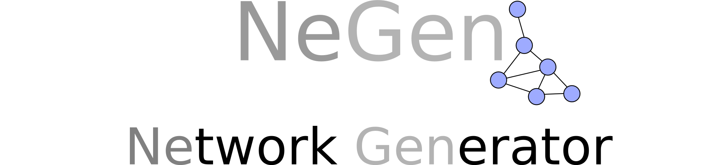

Generate your
network
Type of network
Random
Preferential attachment
Network options
Number of nodes:
Probability of connection:
Generate!
Number of nodes to add:
Number of edges to add by new node:
Generate!
Network information
Number of nodes:
Number of edges:
Avg. degree:
Max. degree:
Min. degree:
Avg. shortest paths: